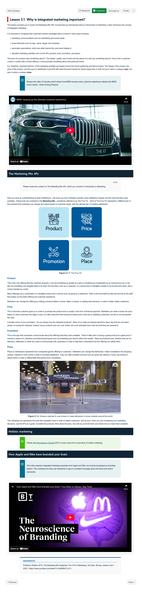
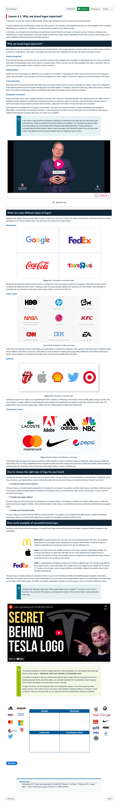
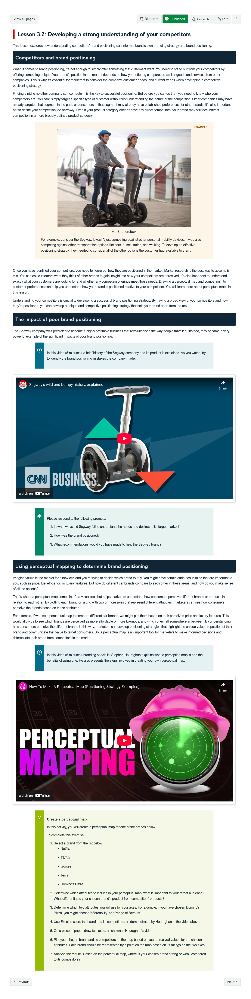

Course Description
A company's most valuable asset is often its brand. Even startups and individuals must be aware of their brand's essence. In larger corporations, a 'Brand Manager' is responsible for maintaining and developing the company's brand value. This course equips students for this role, covering products, whether tangible goods or intangible services. It introduces the practical measurement and management of brand equity, industry-standard brand metrics, and the theory of brand equity, points of parity, and points of difference. Brand co-creation is explored, especially in social media marketing, and leveraging brand equity as a growth strategy.
Learning Outcomes
- Discuss the role of branding in creating strong brands
- Identify and explain strategies that build brand equity
- Demonstrate how knowledge of branding can be applied to marketing
- Display critical thinking and problem-solving skills
- Gain, evaluate, and synthesise information and existing knowledge from a number of sources and experiences
- Prepare a professional, logical and coherent brand development report within a specific context.
Learning Experience
Topics
- The importance of branding
- Developing brand equity
- Understanding the brand offer
- Brand elements to create equity
- Integrated marketing to create brand equity
- Communication techniques
- Harnessing digital communication to build equity
- The value of secondary associations
- The importance of managing the brand portfolio
- Managing brands over time
- Managing brands internationally
Development Team

Nigel Barker
Course Author
Lead
Valerie Hughes
Learning Designer
Lead
Jack Eames
Digital Education Developer
Lead
Assessments
-
Graded Discussions
Short Response Questions
This assessment provides learners with an opportunity to practise and receive feedback on their branding analysis and critical thinking skills. It also provides a forum for the exchange of views.
10%
-
Brand analysis short answer questions
Short Response Questions
Learners are required to respond to each prompt and integrate the theories and concepts from the course, alongside their own interpretation of the issues posed.
30%
-
Report: Brand analysis
Report
In this assessment learners are required to conduct research to understand a chosen brand, the market, their competitors and the activities that have been undertaken to develop and manage the brand. They are asked to describe the marketing and branding strategies that the brand has used and critique each strategy.
20%
-
Report: Brand development
Report
In this report learners are asked to provide recommendations for a chosen brand based on the market and competitive environment.
40%
Snapshots


Visually rich page design " onclick="openSnapshot(this)" >
Learning Resources
-
CBBE Model Explained
Nigel Barker expands on Keller's customer-based brand equity model.
-
Brand Value Chain
Nigel Barker explains the four stages of the brand value chain, and how the model can be used to create brand equity.